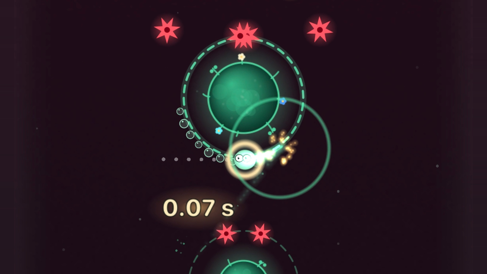

Already have the game? Tap Open in the Naila’s Orbit banner at the top of this page, or open the game from your Home Screen. The Thorn trials are on each garden’s card in the map.
Thorn Trial Weeks
One heart, 17 jumps. Set a time, dare a friend.
18 January – 14 February 2027 · 30 Thorn trials · free, nothing to buy

Get Naila’s Orbit on the App StoreHow it works
- Every garden has three optional Thorn trials, 30 in all. They open on the garden’s map card once you have gathered enough of its seeds.
- Each trial has its own Game Center leaderboard: your best time counts, to the hundredth of a second.
- Dare a friend in Dawn Thorn Dash, a Game Center challenge on Dawn Meadow’s first Thorn trial: one heart, 17 jumps. It opens once you have 24 of Dawn Meadow’s seeds.
- Sign in to Game Center on your iPhone to appear on the boards. The game itself needs no account.
Support and help · Contact: nailasorbit.help@gmail.com